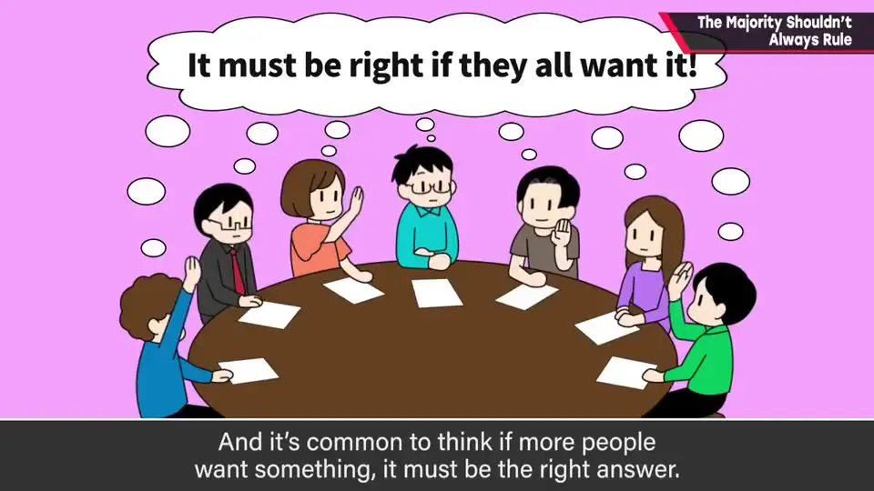
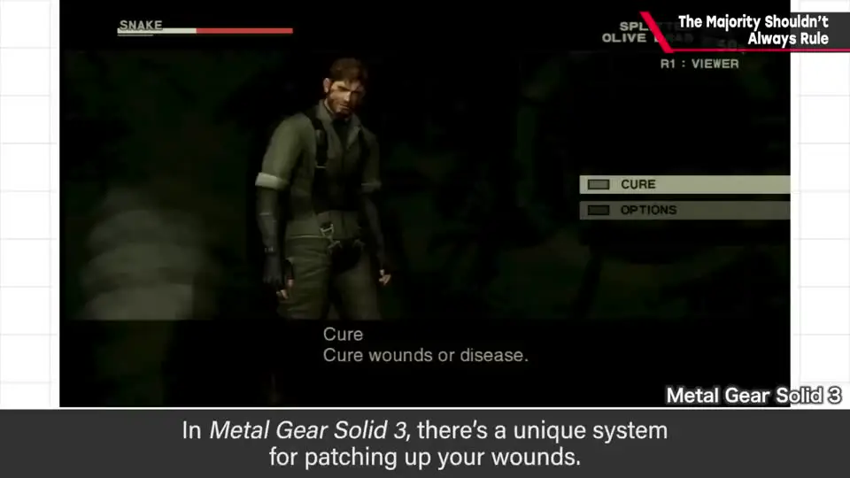
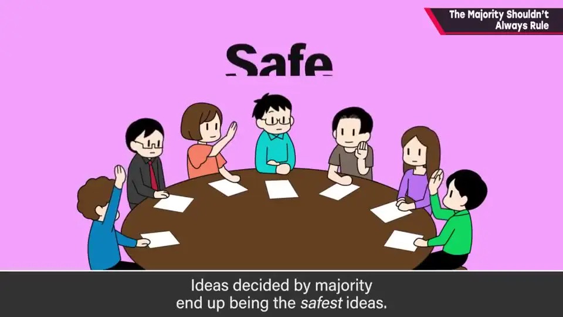
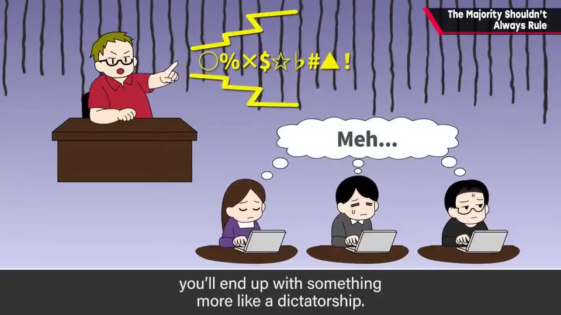
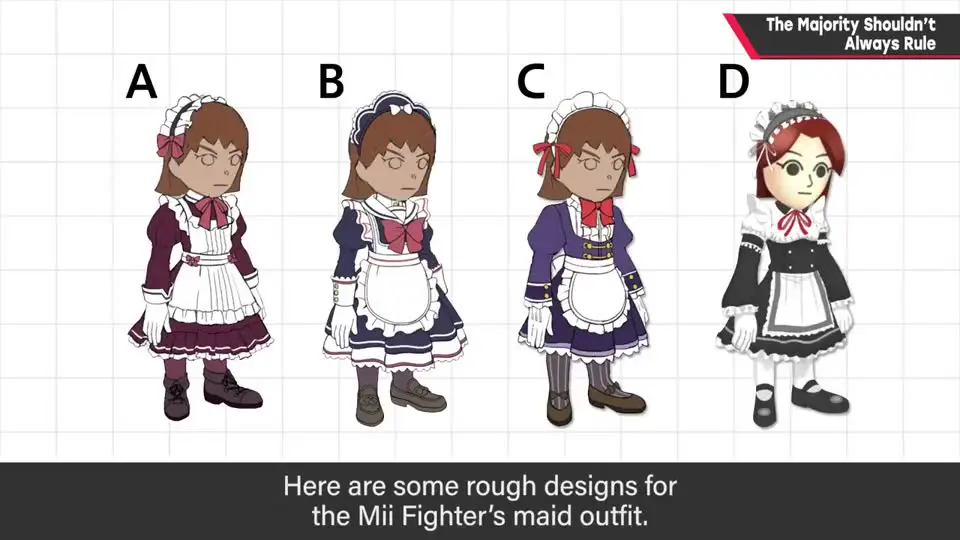
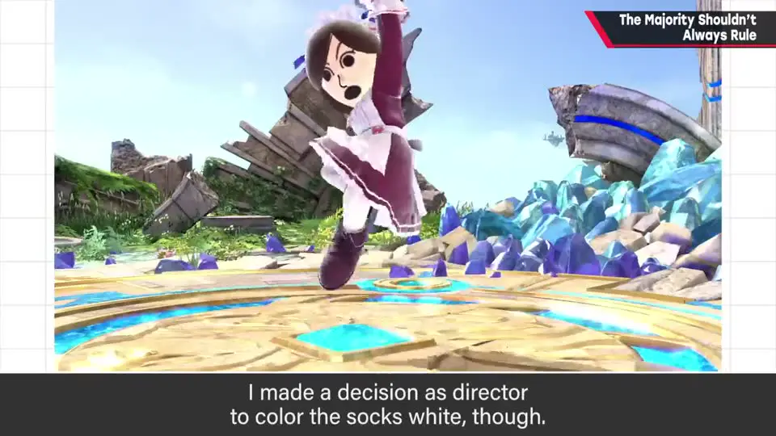
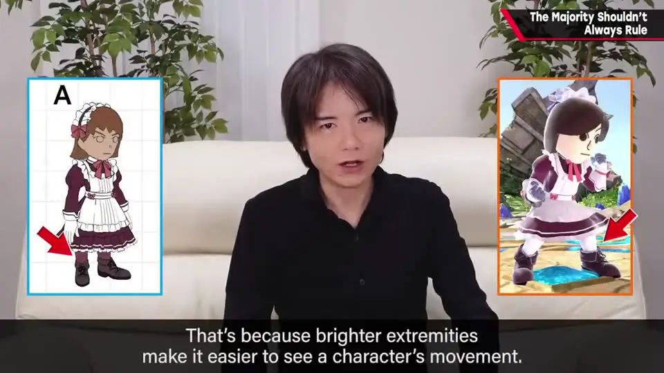

速览
企划内容或规格意见分歧时，人们想靠多数表决，但应尽量避免——本质上没有意义。结论：最好由最能想象全貌的人绞尽脑汁定下合适方向。多数表决很民主，容易让人以为多数人想要的就是正确答案，但作品不是这样：企划时多数人否定的规格，做出来反而有趣的情况很常见——据说《潜龙谍影 3》提出「受伤后要治疗」的企划时，团队里赞成的只有 4 人。多数表决选出的是最稳妥、也就是最平庸的东西。团队运营方面它有时是最好的，但游戏/作品的内容，往往由总监等核心人物负责地独断更好。前提是决策者要有平衡感，否则就会变成独裁；而且要做出正确判断需要正确的信息，员工应把问题点和解决方案候选全部说出来。樱井偶尔也会当余兴投票（如《大乱斗》Mii 格斗家的女仆装设计），但最终由总监判断。
1. 意见分歧时，别急着多数表决 0:04
企划内容或规格意见分歧时，人们会想依靠多数表决——但应尽量避免，本质上它没有意义。
多数表决很民主，容易让人以为「多数人想要的就是正确答案」。但对作品来说并非如此。

2. 多数否定的规格，做出来反而有趣 0:36

- 企划时多数人否定的规格，实际做出来很有趣——这种事很常见。
- 樱井听说：《潜龙谍影 3》提出「受伤后要治疗」这个企划时，团队内赞成的只有 4 个人。
- 玩过完成版的人，应该都能理解治疗伤势的乐趣。
团队运营等方面，有时那是最好的；但对于游戏或作品的内容，由总监等核心人物负起责任独断，往往更好。

3. 独断的前提：平衡感与正确信息 1:21
- 拥有决定权的人必须有良好的平衡感。如果凭薄弱依据一直说不合理的话，就会变成独裁。
- 负责人要做出正确判断，需要正确的信息：员工最好把问题点和解决方案候选全部说出来。
- 有隐瞒或看不见的东西，谁都会判断失误。

解决方案候选全部说出"] --> D["核心人物（总监）
把握全貌 · 有平衡感"] D --> R["负责地决定方向"] V["多数表决"] -.->|"选出最稳妥 = 平庸"| X["不适合用于作品内容"]
4. 樱井也会投票——当作余兴 1:52

- 樱井偶尔也会在团队里多数表决。例如《大乱斗》中 Mii 格斗家的女仆装设计：他自己认为是 A 或 B，作为余兴让员工投了票，各种意见出来，很有意思。
- 最终产品采用的是 A。
- 但由总监判断，只把袜子改成了白色——因为四肢末端的明度变化大，动作看得更清楚。


自测题
1. 为什么樱井认为作品内容不该靠多数表决？举了什么例子？
多数表决选出的是最稳妥、即最平庸的东西；企划时多数人否定的规格做出来反而有趣的情况很常见。例子：《潜龙谍影 3》提出「受伤后治疗」的企划时，据说赞成的只有 4 人，而玩过成品的人都能理解治疗伤势的乐趣。 0:33
2. 由核心人物独断，有什么前提条件？
决策者要有良好的平衡感（否则会变成凭薄弱依据说不合理的话的独裁）；而且需要正确的信息——员工应把问题点和解决方案候选全部说出来，有隐瞒或看不见的东西，谁都会判断失误。 1:21
3. 樱井自己用过多数表决吗？结果如何？
偶尔当余兴用过：《大乱斗》中 Mii 格斗家女仆装的设计让员工投票，意见各种各样很有趣。他本来就觉得 A 或 B 好，最终产品采用了 A，并由总监判断把袜子改成白色——因为末端明度差别大，动作看得更清楚。 1:52